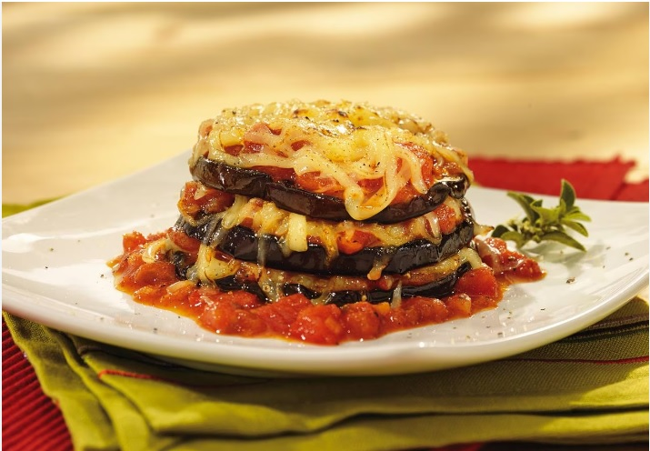

Receta para 2 personas
|
 |
Elaboración
- Calentamos el aceite en una sartén a fuego medio y sofreímos la cebolla 5 minutos o hasta que esté tierna. Añadimos el ajo y sofreímos unos segundos, hasta que empiece a tomar color. Con una espumadera, pasamos el sofrito a un plato. En la misma sartén, sofreímos en tandas las rodajas de berenjena hasta que se doren un poco.
- Disponemos las rodajas de berenjena en una fuente para el horno llana. Espolvoreamos con parte del perejil, sal y pimienta. Añadimos una capa de cebolla, tomate y mozzarella y esparcimos mas perejil, sal y pimienta.
- Continuamos haciendo capas con los distintos ingredientes y acabamos con una capa de berenjena. Espolvoreamos con parmesano. Cocemos la preparación, sin taparla, en el horno precalentado a 200ºC, de 20 a 30 minutos o hasta que la berenjena esté tierna y la superficie tenga un bonito color dorado. Servimos el gratén muy caliente.